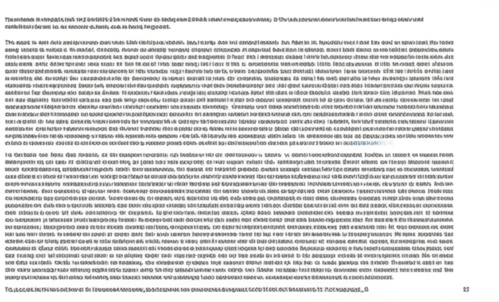

# 今日健康資訊摘要
## 引言
今日的健康資訊涵蓋範圍廣泛，從飲食控制、疾病預防、睡眠品質到醫療新知，提供了豐富的健康生活參考。其中高血壓相關的資訊尤為突出，有多篇文章提及飲食與高血壓的關係，以及控制血壓的重要性。此外，也關注了腎臟健康、糖尿病、睡眠品質以及智慧醫療的發展。以下針對幾個重點進行整理和分析。
## 主體內容
### 第一點：高血壓的飲食控制與預防
多篇文章都提到了高血壓的飲食控制方法。例如，騰訊新聞指出一些常見食物具有天然降壓效果，而UFood香港則著重介紹了白木耳、雪耳、黑木耳等食材，並強調其高鉀含量有助於平衡身體鹽份，進而幫助高血壓患者控制血壓。此外，聯合早報也提到控制血壓對於預防主動脈剝離的重要性。這些資訊都表明，飲食管理在高血壓的預防和控制中扮演著重要的角色。
### 第二點：疾病預防與健康警訊
除了高血壓，新聞也關注了其他疾病的預防。南投縣政府衛生局呼籲民眾踴躍接種新冠疫苗，並提醒注意重症警示症狀。另外，MSN新聞則報導了嘉義一名男子出現蛋白尿的案例，提醒民眾注意尿液異常可能是腎臟疾病的警訊。早安健康則強調快樂的心境和健康的生活方式對於整體健康的重要性。這些資訊提醒我們，及早發現並預防疾病，是維持健康的重要一環。
### 第三點：睡眠品質與智慧醫療
三立新聞網報導了台灣睡眠品質不佳的問題，並指出其可能導致心血管疾病。健康傳媒則報導了智慧醫療的發展，以及國際買家對台灣新創方案的興趣。良好的睡眠品質對於身心健康至關重要，而智慧醫療的發展則為疾病的診斷和治療帶來了新的可能性。
## 結論
總體而言，今天的健康資訊強調了飲食控制、疾病預防、以及健康的生活方式對於維持身心健康的重要性。特別是高血壓的相關資訊，提醒我們注意日常飲食，並定期監測血壓。同時，也要關注自身身體發出的警訊，及早就醫。 此外，也應重視睡眠品質，並關注智慧醫療的發展，以便更好地管理和維護自身的健康。